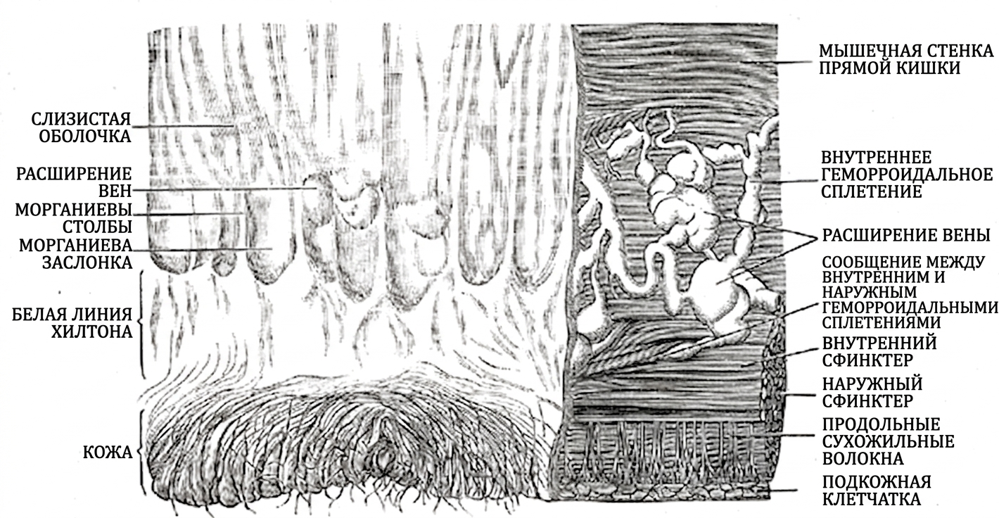

Заболевания прямой кишки
Анатомия и методы исследования прямой кишки
Прямая кишка состоит из ампулы (резервуар для кала в малом тазу с тремя поперечными складками) и анального канала. Стенка включает слизистую оболочку, подслизистую основу, внутренний циркулярный и наружный продольный мышечные слои, а также серозную оболочку в верхнем отделе ампулы.

Слизистая ампулы покрыта цилиндрическим эпителием и образует заднепроходные столбы (columnae anales). Между ними находятся анальные пазухи (sinus anales), куда открываются протоки анальных желёз, доходящих до межсфинктерного пространства. Закупорка протока железы формирует абсцесс с прорывом в параректальную клетчатку (парапроктит), делая пазухи и железы воротами инфекции.
Смена цилиндрического эпителия многослойным плоским образует зубчатую линию (linea dentata). Ниже проходит аноректальная линия (linea anorectalis) — ориентир отсчёта анального канала и уровня патологий.
Удержание кала обеспечивают непроизвольный внутренний сфинктер (m. sphincter ani internus из гладкой мускулатуры) и произвольный наружный сфинктер (m. sphincter ani externus из поперечнополосатой мускулатуры), разделённые межсфинктерным пространством.
Методы исследования: пальцевое исследование (оценка тонуса сфинктера, стенок, образований и болезненности); аноскопия (осмотр анального канала и нижнего отдела прямой кишки); ректороманоскопия (осмотр прямой и дистального отдела сигмовидной кишки, биопсия); колоноскопия (осмотр всего толстого кишечника до илеоцекального угла); ирригоскопия (рентгеноскопия с бариевой взвесью); эндоректальное ультразвуковое исследование (послойная оценка стенки кишки, инвазии опухоли, сфинктеров и абсцессов).
Геморрой: классификация и стадии
Геморрой — варикозное расширение кавернозных телец прямой кишки. Внутренние геморроидальные узлы расположены выше зубчатой линии, покрыты слизистой оболочкой и безболезненны; наружные геморроидальные узлы находятся ниже зубчатой линии, покрыты анодермой и болят при воспалении или тромбозе.[Кузин, с. 673]
| Стадия | Признак выпадения | Возможность вправления |
|---|---|---|
| I | Узлы выступают в просвет кишки, но не выходят наружу; во время дефекации — выделение крови из анального канала | Вправление не требуется — узлы наружу не выходят |
| II | Узлы выпадают при дефекации | Вправляются самостоятельно |
| III | Узлы выпадают даже при незначительной физической нагрузке | Самостоятельно не вправляются, необходимо вправлять рукой |
| IV | Узлы постоянно находятся за пределами анального канала | Не вправляются |
Кровотечение из прямой кишки при геморрое проявляется алой кровью, не смешанной с калом.[Кузин, с. 614] При раке кровь тёмная и перемешана с калом и слизью, при анальной трещине сочетается с резкой болью. Кровотечения также вызывают рак, трещины, повреждения, полипы, выпадение кишки, язвы, проктит, парапроктит и биопсия.[Синдромология, с. 380] Для дифференциации проводят осмотр, пальцевое исследование, аноскопию, ректороманоскопию, ирригоскопию и колоноскопию. Главное правило: алую кровь из прямой кишки нельзя списывать на геморрой до тех пор, пока не исключён рак.[Кузин, с. 674]
Осложнения и лечение геморроя
Осложнения развиваются по цепочке «тромбоз → ущемление → некроз → парапроктит».[Кузин, с. 676] Тромбоз геморроидальных узлов проявляется плотным синюшным болезненным узлом; ректальное исследование в острый момент нецелесообразно.[Кузин, с. 675] Ущемление узлов возникает из-за спазма сфинктера с развитием тромбоза и некроза (узлы тёмно-синюшного или чёрного цвета).[Кузин, с. 676]
Консервативное лечение
Включает диетотерапию, флеботропные препараты (венорутон, детралекс, диосмин, Прокто-Гливенол, проктоседил),[Кузин, с. 674] местные мази и свечи (ауробин, ультрапрокт, левомеколь), а также ванночки с перманганатом калия. Абсолютные противопоказания к операции: выраженная портальная гипертензия и гипертоническая болезнь III стадии.[лекция, с. 13]
Хирургическое лечение: показания и этапы
На I стадии проводят консервативное лечение, на II — малоинвазивное (лигирование, склеротерапия, коагуляция), на III — малоинвазивное или хирургическое. При IV стадии и осложнениях показана геморроидэктомия (операция Миллигана–Моргана с сохранением кожно-слизистых мостиков).[Кузин, с. 675]
Тактика при тромбозе и ущемлении
При тромбозе наружного узла предпочтительно хирургическое иссечение узла. При ущемлении внутренних узлов начинают с консервативного лечения: при самостоятельном вправлении узлов через 5–7 дней проводят плановую геморроидэктомию, при неэффективности — неотложную операцию.[Кузин, с. 676]
Главный вывод раздела: тактика при геморрое определяется стадией и наличием осложнений — консервативное лечение остаётся первым шагом, но при тромбозе, ущемлении и некрозе промедление с операцией ведёт к парапроктиту.
Трещина заднего прохода
Трещина заднего прохода — это хроническая линейная язва в нижней части анального канала. Дно дефекта — обнажённые волокна анального сфинктера, а края уплотняются и покрываются фиброзной тканью. Занимает третье место среди болезней прямой кишки (после колитов и геморроя). Размеры: длина около 2 см, ширина 2–3 мм. Девяносто процентов трещин располагаются в нижней части анального канала.[Кузин, с. 676]
Типичное место — задняя комиссура анального канала (участок стенки, обращённый к копчику), где слизистая хуже кровоснабжается и сильнее травмируется каловыми массами. Симметричное поражение передней и задней комиссур называют «зеркальными» трещинами.[Кузин, с. 676]
Клиническая картина включает: резкую боль при дефекации (длится от нескольких минут до нескольких часов), алую кровь на поверхности кала в виде полос или капли в конце дефекации и спазм сфинктера (рефлекторное стойкое сокращение внутреннего сфинктера в ответ на боль).
Спазм нарушает кровоснабжение краёв трещины и мешает заживлению, а незаживающая трещина снова вызывает спазм. Длительно существующая трещина замещает мышечные элементы соединительной тканью с формированием ригидного фиброзного кольца, суживающего задний проход.[Кузин, с. 676]
Диагноз ставится по анамнезу, осмотру и аноскопии. Одиночный (90 %) линейный дефект в задней комиссуре с выраженным спазмом характерен для типичной трещины. Атипичные трещины требуются дифференцировать с раком (подтверждается биопсией), болезнью Крона (биопсия с обнаружением гранулём), сифилисом (серология), туберкулёзом (бактериология) и ВИЧ-инфекцией (анализ на ВИЧ).
| Признак | Типичная трещина | Рак прямой кишки | Болезнь Крона | Специфические язвы (туберкулёз, сифилис, ВИЧ) |
|---|---|---|---|---|
| Локализация | Задняя (реже передняя) комиссура | Любой отдел, чаще ампула | Нетипичная, нередко множественная | Нетипичная, возможна на любой стенке |
| Форма и края | Линейная, длина около 2 см, ширина 2–3 мм, края ровные | Неправильная, края плотные, вывороченные | Неправильная, подрытые края, «щелевидные» язвы | Неправильная, возможно подрытые или гранулирующие края |
| Количество | Одиночная (90 %) | Одиночный очаг | Нередко множественные | Могут быть множественными |
| Боль и спазм | Выраженная боль, длительный спазм сфинктера | Боль появляется поздно | Умеренная боль, спазм менее характерен | Боль варьирует |
| Кровь | Алая, на поверхности кала, капли в конце дефекации | Тёмная, изменённая, перед калом или смешана с ним | Кровь и слизь, возможна диарея | Варьирует |
| Верификация | Осмотр, аноскопия | Биопсия, гистология | Биопсия, гистология (гранулёмы) | Серология (сифилис), бактериология (туберкулёз), анализ на ВИЧ |
Консервативное лечение включает слабительные, спазмолитики, болеутоляющие, свечи с анестетиками, мази, микроклизмы, тёплые сидячие ванны с раствором перманганата калия и физиотерапию.
Ключевой шаг — спиртоновокаиновая блокада (введение анестетика под основание трещины или 25–30 мг гидрокортизона в 3–4 мл раствора новокаина) и насильственное расширение сфинктера для устранения спазма. Острые трещины заживают в течение 3–6 недель.[Кузин, с. 677]
Показания к операции: хроническая трещина или безуспешность консервативного лечения. Операция включает иссечение трещины (с отправкой материала на гистологию) и боковую сфинктеротомию (подслизистое рассечение части внутреннего сфинктера). Сочетание иссечения трещины с боковой сфинктеротомией — стандарт хирургического лечения хронической анальной трещины.
Острый парапроктит
Парапроктит — это воспаление параректальной клетчатки (жировой ткани вокруг прямой кишки). На него приходится около 30 % всех проктологических заболеваний, а распространённость в популяции составляет примерно 0,5 % населения.[Кузин, с. 677]
Инфекция попадает в клетчатку через анальные железы, открывающиеся в анальные пазухи вдоль зубчатой линии, либо лимфогенным путём. Вторичный парапроктит возникает при переходе воспаления с предстательной железы, уретры, женских половых органов или при травме прямой кишки.[Кузин, с. 677]
По этиологии выделяют: обычный (полимикробный), анаэробный парапроктит (протекает с газовой флегмоной, гнилостным процессом, крепитацией, зловонным отделяемым, некрозом и сепсисом), специфический (туберкулёз, сифилис, актиномикоз) и травматический.
| Форма | Анатомическое пространство | Глубина | Типичные симптомы |
|---|---|---|---|
| Подкожный парапроктит | Подкожная клетчатка вокруг ануса | Поверхностный | Острые дёргающие боли, гиперемия и отёк кожи, флюктуация; температура до 39 °С, ознобы |
| Подслизистый парапроктит | Подслизистый слой стенки прямой кишки | Поверхностный | Умеренные боли в прямой кишке, небольшое повышение температуры |
| Ишиоректальный парапроктит | Седалищно-прямокишечная ямка | Глубокий | Тупые боли, быстро становящиеся пульсирующими; выраженная интоксикация; местные изменения появляются через 5–7 дней |
| Пельвиоректальный парапроктит | Пространство над мышцами тазового дна, под брюшиной | Очень глубокий | Длительная лихорадка без локальных признаков; диагноз без УЗИ или КТ крайне труден |
| Ретроректальный парапроктит | Позадипрямокишечное (пресакральное) пространство | Глубокий | Боли в прямой кишке и крестце, усиливающиеся в положении сидя и при давлении на копчик; иррадиация в бёдра и промежность |
Подкожный парапроктит встречается у 50 % больных (поверхностный, с гиперемией, отёком и флюктуацией). Ишиоректальный парапроктит наблюдается у 35–40 % больных (местные изменения кожи появляются через 5–7 дней). Пельвиоректальный парапроктит расположен под брюшиной и требует УЗИ, КТ или МРТ. Ретроректальный парапроктит наблюдается у 1,5–2,5 % больных.[Кузин, с. 678]
Клинически заболевание проявляется болями в промежности или прямой кишке, лихорадкой и интоксикацией. Переход болей в пульсирующие означает формирование гнойника.[Кузин, с. 678]
Лечение только хирургическое, под общим обезболиванием. Выполняется вскрытие и дренирование гнойника с обязательным иссечением поражённой анальной пазухи (входных ворот инфекции).[Кузин, с. 680] Без лечения происходит прорыв гнойника в просвет кишки (неполный внутренний свищ) или наружу через кожу (наружный свищ) с переходом в хронический парапроктит.[Кузин, с. 679]
При экстрасфинктерных свищах используют лигатурный метод: через полость и пазуху проводят эластичную лигатуру, которую подтягивают каждые 2–3 дня для медленного рассечения и фиброзирования сфинктера.[Кузин, с. 681] При ретроректальной форме разрез длиной 5–6 см делают между копчиком и анусом, с пересечением заднепроходно-копчиковой связки в 1 см от копчика.[Кузин, с. 681]
Хронический парапроктит: свищи прямой кишки
Хронический парапроктит встречается у 30—40 % всех проктологических больных и является следствием острого парапроктита. Из-за незакрытого внутреннего отверстия в стенке кишки и поступления газов и кала канал выстилается грануляционной тканью — формируется свищ.[Кузин, с. 681]
Полный свищ имеет внутреннее отверстие на стенке прямой кишки и наружное на коже промежности. Неполный свищ (у 10 % больных) имеет только внутреннее отверстие и слепо заканчивается в параректальной клетчатке после самопроизвольного вскрытия гнойника в просвет кишки.[Кузин, с. 681]
| Тип свища | Частота | Положение хода | Риск для сфинктера |
|---|---|---|---|
| Интрасфинктерный | 25—35 % больных | Целиком внутри сфинктера; ход прямой и короткий | Минимальный |
| Транссфинктерный | 40—45 % больных | Часть хода пересекает сфинктер, часть — в клетчатке | Умеренный; зависит от глубины пересечения |
| Экстрасфинктерный | 15—25 % больных | Ход огибает сфинктер через клетчатку таза, минуя его | Высокий при неправильной операции |
Транссфинктерный свищ — самый частый (40—45 % больных).[Кузин, с. 612] Интрасфинктерный свищ расположен кнутри от наружного сфинктера. Транссфинктерный свищ пронизывает волокна сфинктера и уходит в параректальную клетчатку. Экстрасфинктерный свищ проходит в клетчатке таза, обходя сфинктер снаружи. Транс- и экстрасфинктерные варианты с полостями в ишиоректальной и пельвиоректальной клетчатке называют сложными.[Кузин, с. 682]
При широком свище выходят газы и кал, при узком — серозно-гнойное отделяемое. При закрытии наружного отверстия возникает обострение с болями, исчезающими при возобновлении дренирования.[Кузин, с. 682]
Осложнения: проктит, мацерация кожи, замещение мышц сфинктера соединительной тканью (ригидность, сужение анального канала, недержание), малигнизация.[Кузин, с. 682]
Диагностика: осмотр, пальпация, пальцевое исследование, введение метиленового синего, зондирование мягким зондом, фистулография, аноскопия и эндоректальное УЗИ.[Кузин, с. 682]
Консервативные методы подготавливают к операции.[Кузин, с. 683] Выбор хирургического лечения:
- При интрасфинктерных свищах: иссечение свища в просвет кишки, выскабливание дна раны, вскрытие и дренирование гнойной полости по зонду.[Кузин, с. 683]
- При транссфинктерных свищах: иссечение свища в просвет кишки с ушиванием мышц сфинктера (при глубоком пересечении) или без него, дренирование полости.[Кузин, с. 683]
- При экстрасфинктерных свищах: полное иссечение хода и ушивание внутреннего отверстия. При сложных свищах применяют лигатурный метод (лигатуру подтягивают каждые 2—3 дня).[Кузин, с. 683]
Неполные свищи иссекают в просвет прямой кишки изогнутым под прямым углом зондом.[Кузин, с. 683] Тип свища определяет выбор операции и прогноз.[лекция, с. 27]
Выпадение прямой кишки
Выпадение прямой кишки — выхождение кишки наружу за пределы заднего прохода.[Кузин, с. 684]
Патогенез включает предрасполагающий фактор (слабость мышц тазового дна) и производящий фактор (повышение внутрибрюшного давления при запорах, поносах, тяжелом труде, затрудненном мочеиспускании, кашле). Способствуют геморрой, проктит, проктосигмоидит, неспецифический язвенный колит.[Кузин, с. 683]
Стадии: при I стадии кишка выпадает только при дефекации и самостоятельно вправляется; при II стадии выпадает при физической нагрузке и вправляется рукой; при III стадии выпадает при незначительной нагрузке или стоянии и не удерживается.[Кузин, с. 684]
Осложнения: недостаточность сфинктера (I степень — недержание газов; II — газов и жидкого кала; III — плотного кала), ущемление (некроз, перфорация), изъязвления, кровоточивость и воспаление.[Кузин, с. 684]
Диагностика: натуживание на корточках. Различия с инвагинацией представлены в таблице.[Кузин, с. 684]
| Признак | Выпадение прямой кишки | Инвагинация |
|---|---|---|
| Форма выпавшего образования | Конус или цилиндр из концентрических складок | Цилиндр с двойной стенкой |
| Борозда между образованием и стенкой анального канала | Отсутствует или поверхностная | Глубокая бороздка — палец уходит далеко вверх |
| Переход слизистой на кожу промежности | Слизистая переходит непрерывно | Слизистая не переходит на кожу — между ними чёткая граница |
| Типичный возраст | Пожилые, реже дети | Дети до 2 лет (чаще), взрослые реже |
| Боль | Умеренная, связана с актом дефекации | Схваткообразная, интенсивная |
При инвагинации определяется глубокая бороздка и отсутствие непрерывного перехода слизистой на кожу, а также схваткообразная боль.
Лечение детей консервативное. У взрослых при Surgery основным является хирургическое: операция Зеренина–Кюммелля (фиксация стенки кишки к передней продольной связке позвоночника в области LV–SI), дополняемая сфинктеропластикой.[Кузин, с. 684] У больных с высоким операционным риском применяют паллиативную операцию Тирша (подкожная имплантация проволоки, фасции бедра, нити или полоски кожи).[Кузин, с. 684]
Полипы и рак прямой кишки
Полип прямой кишки — доброкачественное образование из слизистой оболочки с риском малигнизации. Диффузный полипоз — наследственное заболевание с сотнями полипов, относящееся к облигатным предракам.
Симптомы рака прямой кишки: примесь крови (тёмной, перемешанной с калом) и слизи в кале, тенезмы, изменение формы стула (лентовидный кал).[Синдромология, с. 378]
Диагностика: пальцевое исследование, ректороманоскопия с биопсией, колоноскопия.
| Уровень опухоли (расстояние от ануса) | Операция | Результат |
|---|---|---|
| Верхнеампулярный отдел (свыше 10–12 см) | Передняя резекция прямой кишки | Естественный задний проход сохраняется |
| Среднеампулярный отдел | Брюшно-анальная резекция | Задний проход сохраняется, формируется колоанальный анастомоз |
| Нижнеампулярный отдел (до 6 см) | Брюшно-промежностная экстирпация | Задний проход удаляется, накладывается постоянная колостома |
При опухолях выше 6 см от анального края выполняется брюшно-анальная резекция с формированием колоанального анастомоза и сохранением сфинктера. При поражении нижнеампулярного отдела (до 6 см) выполняют брюшно-промежностную экстирпацию через брюшной и промежностный доступы с удалением сфинктера и наложением постоянной колостомы.[Кузин, с. 683]
Инородные тела прямой кишки
Инородное тело прямой кишки — предмет в её просвете, не способный выйти самостоятельно. Промедление грозит перфорацией и перитонитом.[Синдромология, с. 378]
Предметы попадают в кишку четырьмя путями: самопроизвольный пассаж сверху вниз (застревание в ректосигмоидном изгибе или ампуле), сознательное введение через задний проход, криминальное введение и ятрогенный путь (осложнение манипуляций).
Диагностика включает анамнез, пальцевое ректальное исследование (определяет расположение, консистенцию, подвижность тела и состояние стенки кишки) и рентгенографию брюшной полости в двух проекциях (уточняет уровень, форму, количество предметов и исключает свободный газ под куполом диафрагмы). Аноскопия и ректороманоскопия дополняют обследование при отсутствии повреждений стенки.
| Признак | Варианты | Примеры |
|---|---|---|
| Химический состав | Органические | Дерево, кость, фрукты, овощи |
| Неорганические | Стекло, металл, пластик, резина | |
| Локализация | Низкое (ампула прямой кишки) | Доступно пальцу и инструменту через задний проход |
| Высокое (ректосигмоидный отдел и выше) | Требует эндоскопического или оперативного доступа | |
| Рентгеноконтрастность | Рентгеноконтрастное | Металл, стекло, кость — видны на обзорном снимке |
| Рентгенонеконтрастное | Дерево, пластик, резина — требуют УЗИ или КТ |
Рентгеноконтрастное тело (задерживающее рентгеновские лучи) обнаруживается на снимке; рентгенонеконтрастное требует КТ. Локализация определяет выбор доступа, а состав — риск перфорации.
Лечение начинают с малоинвазивных методов: очистительных клизм, пальцевого извлечения под местной анестезией или девульсии ануса — принудительного расширения анального канала под общей или спинномозговой анестезией с последующим извлечением предмета.
Показания к открытой операции: неэффективность малоинвазивных методов, высокое расположение, фиксация к стенке, перфорация или перитонит. При целой стенке предмет низводят или выполняют колотомию — разрез стенки кишки над предметом с его извлечением и ушиванием. При перитоните выполняют санацию брюшной полости и наложение колостомы — выведение проксимального конца кишки на переднюю брюшную стенку в виде искусственного калового свища.
Источники
- Госпитальная хирургия. Синдромология. Миланов 2013
- Хирургические болезни. Кузин
Иллюстрации
- Europe PMC, CC BY, https://europepmc.org/article/PMC/PMC12967802
- Europe PMC, CC BY, https://europepmc.org/article/PMC/PMC12967802
- Wikimedia Commons, PUBLIC DOMAIN, https://commons.wikimedia.org/wiki/File%3AGray1081.png